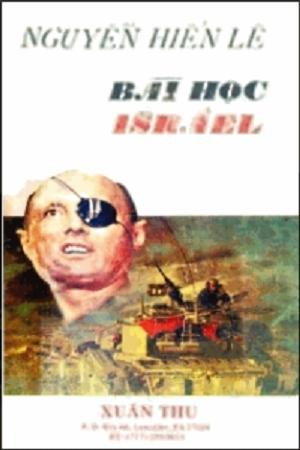

TỰA

ột sinh viên Việt Nam học ở ngoại quốc viết thư cho tôi, bảo: “Người mình hồi trẻ học tinh thần của Do Thái, hồi già nên học tinh thần của Ấn Độ”.

Phải lắm. Về già nên có tinh thần Ấn Độ, tức tinh thần Phật giáo. Tôi thích tinh thần Lão giáo hơn. Khó tưởng tượng được Đức Thích Ca mà đặt một em bé trên đùi rồi vuốt ve mái tóc tơ, cặp má mịn của nó: còn Lão Tử thì rất có thể xốc nách một em tung tung nó lên cho nó cười sằng sặc, hoặc nắm tay nó mà giung giăng giung giẻ dưới bóng hoàng lan quanh một bãi cỏ. Nhưng Phật hay Lão thì cũng vậy.

Còn tuổi trẻ thì nên học tinh thần Israel, chứ không phải tinh thần Âu Mỹ, cũng phải tinh thần Nhật Bản. Nhật Bản bắt đầu canh tân cách đây đã một thế kỷ nên tôi không biết hiện tình nước ta ở vào cáì giai đoạn đã qua nào của họ, nhưng chắc là họ bỏ xa ta ít nhất sáu chục năm mả tinh thần của họ lúc này chẳng khác tinh thần Âu, Mỹ là mấy, sản xuất cho mạnh để vượt Pháp, Anh, đuổi kịp Mỹ, Canada. Bấy nhiêu cũng đáng quý đấy, nhưng chưa đủ và không hợp với hiện tình của ta, cho nên học Israel có lợi hơn là học Nhật Bản.
Tôi dùng tiếng học ở đây theo cái nghĩa của Khổng Tử: trạch kỳ thiện giả, kỳ bất thiện giả. Vì Israel không phải luôn luôn làm cho thế giới cảm phục. Tôi không ưa những trang sử năm 1956 của họ. Đành rằng Ai Cập vẫn thường khiêu khích Israel, coi họ là kẻ thủ, nhưng lúc đó Ai Cập chỉ lo hất chân Anh, Pháp ra khỏi kênh Suez mà Israel tự nguyện làm tay sai cho Anh Pháp, ngấm ngầm âm mưu với Anh Pháp để thừa lúc bất ngờ, ồ ạt tấn công Ai Cập thì của chiến thắng họ càng rực rỡ bao nhiêu, thế giới càng ghét họ bấy nhiêu. Nhưng lỗi của họ một phần thì lỗi của thực dân Anh Pháp tới ba.
Đó là một trong vài cái “bất thiện” của họ. Còn nhũng cái thiện của họ thì khá nhiều mà trong cuốn sách này tôi sẽ ráng trình bày với độc giả.
Họ có những tấm gương mạo hiểm, chiến đấu, kiên nhẫn, hy sinh cho ta noi: có nhiều kinh nghiệm về việc định cư, việc khuếch trương giáo dục, canh nông, về cách tổ chức các cộng đồng, cho ta học.
Nhưng đáng quí hơn hết là họ gián tiếp vạch cho ta thấy cát hại của thực dân và chứng tỏ cho ta tin rằng chỉ trên nửa triệu người cũng có thể thắng thực dân được. Họ bị cả thế giới coi là một bọn mất gốc, lang thang, ti tiện, vậy mà khi Herzl hô hào người Do Thái phải tự cứu lấy mình, thì họ đã biết tự cứu lấy họ.
Thực dân nào, bất kỳ Đông hay Tây, cũng chỉ nhắm cốt quyền lợi của họ trước hết: còn có lợi cho họ thì họ giúp, hếl lợi thì họ bỏ và đàn áp. Do Thái bị Anh bỏ rồi Nga bỏ, Ai Cập bị Mỹ bỏ rồi Nga bỏ; cả bán đảo Ả Rập là nơi họ tranh giành ảnh hưởng với nhau. Nhưng trên nửa triệu dân Do Thái đã quyết tâm phục hồi quốc gia thì thực dân Anh cũng phải chịu thua mà Nga cũng không dám ăn hiếp họ. Họ tự coi họ là một dân tộc thì thực dân đảnh phải nhận họ là một dân tộc.
Càng đọc lịch sử thế giới tôi càng thấy đi theo thực dân thì luôn luôn lợi bất cập hại. Phải là một dân tộc có thực lực, có bản lãnh cao, có tài chống đỡ giỏi thì mới có thể hỏi bị họ lợi dụng nhưng nếu lỡ mà gắn bó với họ thì không sớm thì muộn, thực nào cũng khốn đốn, điêu tàn với họ. Còn các nước nhược tiểu thì chỉ được đem thân ra làm quân tốt thì cho họ trên bàn cờ quốc tế. Có lẽ chính Israel cũng hiểu như vậy nên năm 1967 họ đòi trực tiếp thương thuyết với khối Ả Rập, không muốn Nga, Mỹ làm trung gian. Nội một điều này cũng đủ cho chúng ta suy nghĩ.
Từ sau thế chiến thứ nhì đến nay, cường quốc nào cũng đua nhau chế tạo võ khí cho thật tinh xảo, có sức mạnh tàn phá mỗi ngày một khủng khiếp.
Năm nào cũng có những phát minh mới, thành thử vũ khí nào tối tân nhất cũng chỉ ít năm hoá ra cổ lỗ. Vậy thì hàng núi vũ khí cũ họ dùng vào đâu? Họ có liệng xuống biển không, có phá huỷ không, hay phải tìm cách “tiêu thụ”, mà tiêu thụ ở đâu? Có ở trên đất họ không?
Cho nên cứ lâu lâu trên báo báo, ta được đọc những lời tuyên bố thực lạ lùng, hoặc nhiều nước lo hoà bình mà vãn hồi ở một nước khác thì kinh tế nước minh sẽ nguy, hoặc nuôi một ngưòi lính còn đỡ tốn hơn nuôi một người thợ thất nghiệp, hoặc nước nọ lâm chiến mà không muốn cho tướng của mình yhắng trận, cung cấp cho Đồng minh của mình toàn những khí giới cổ lỗ, đành rằng thân phận bi đát của các nước nhược tiểu chúng ta có khi do tình thế bắt buộc, không thể không đứng vào phe nảy hay phe khác, nhưng lắm lúc ta tự hỏi giá non một phần tư thế kỷ nay, dân tộc ta không bị lôi kéo vào phe nào cả, tự lực trồng lúa lấy mà ăn, dệt vải lấy mà bận, can đảm sống lối sống riêng của mình, hoà thuận nhau, bao dung nhau, không ai giàu quá, không ai nghèo quá, chẳng cần Ti vi, máy lạnh, những phim cao bồi, những nhạc bo bốp… thì lúc này đây, trên những đồng quê mơn mởn của chúng ta, tất vang lên tiếng hò, tiếng hát, chứ đâu có tan tành, hoang tàn, thấm đầy máu, vùi đầy xương như vầy!
Độc giả sẽ trách tôi là không tưởng. Tôi không dám cãi, nhưng dân Do Thái đã cho tôi thấy vài cái không tưởng trở thành hiện tượng, chỉ nhờ họ biết đoàn kết với nhau, hiểu rằng không thể tin gì ở thực dân. Ai cũng biết rằng đoàn kết thì việc gì cũng thành, thì thực dân nào cũng phảt ngán. Vậy thì sỡ dĩ chúng ta cho là “không tưởng” chỉ vì không biết đoàn kết chăng? Chính sự đoàn kết là “không tưởng” chăng?
Tôi lại nghiệm thấy có lãnh tụ tài ba, đức hạnh thì dân tộc nào cũng biết đoàn kết, thiếu lãnh tụ tài ta, đức hạnh thì dân tộc nào cũng tan rã. Trần Hưng Đạo cầm quân thì toàn quân như một, ai cũng căm sự tàn bạo của quân Nguyên; Lê LợI dấy binh thí toàn dân như một, ai cũng hận thói thâm hiểm của triều Minh. Tôi muốn trình với độc giả bài học của Do Thái mà vô tình trở về bài học của tổ tiên. Điều đó làm cho tôi phấn khởi.
Vậy rốt cuộc chỉ vì chúng ta thiếu lãnh tụ, mà vị nảo làm cho toàn dân hiểu được cái thảm hoạ của thực dân (bấl kỳ thực dân dân nảo) rồi đồng lòng tự lực sống đời sống của mình, không nhờ vả ai, dù phải gian lao chịu đựng hàng chục năm, vị đó sẽ được làm lãnh tụ dân tộc. Tôi cầu nguyện cho vị đó xuất hiện. Chỉ lúc đó, dân tộc ta mới có một tương lai sáng sủa vẻ vang, còn theo gót người thì không sao ngửng đầu lên được.
Sài gòn ngày 10-6-1968